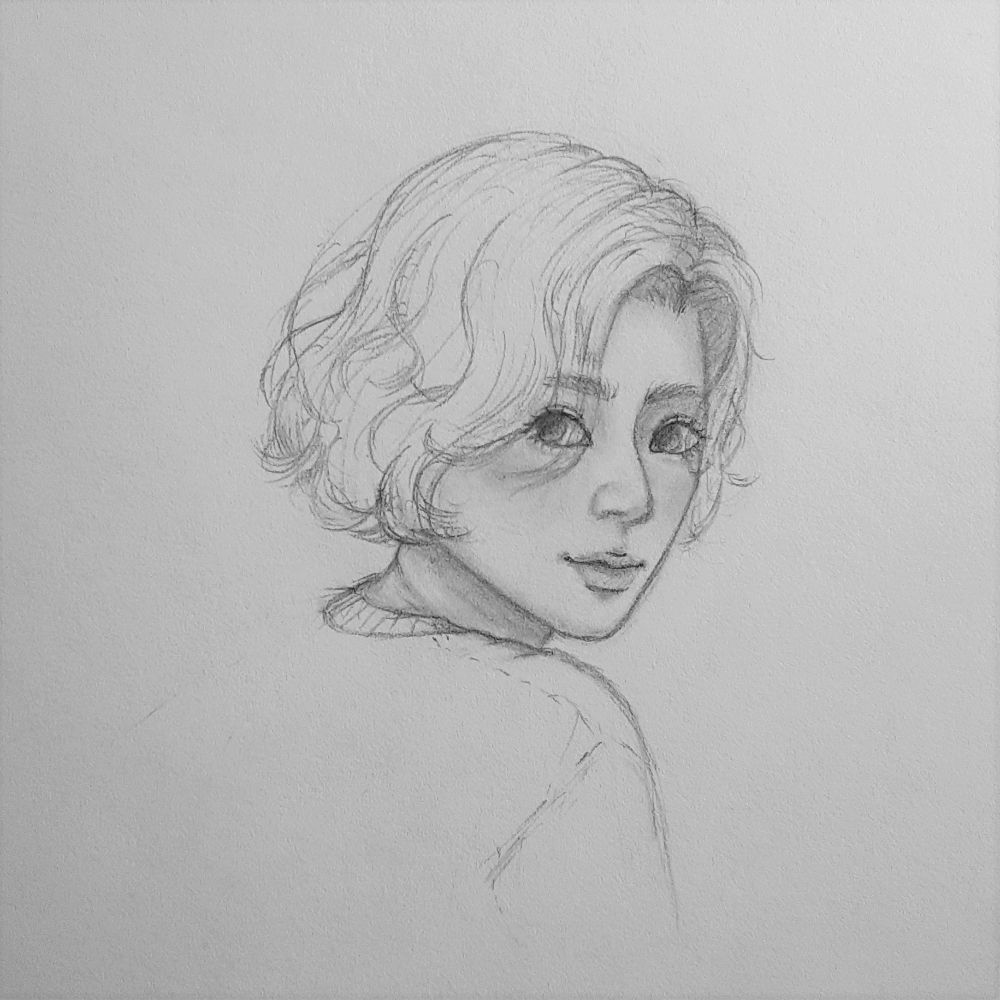
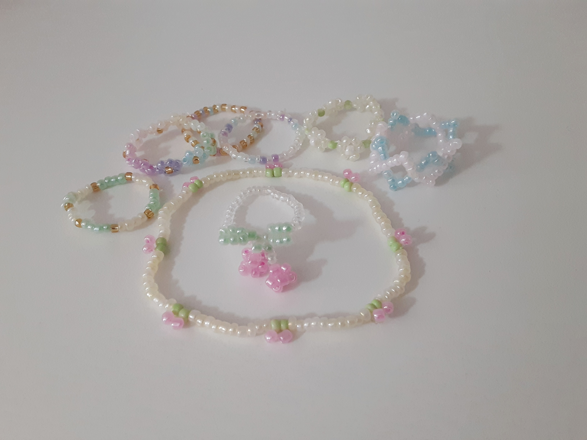

Ever since I was little, drawing was one of my favorite
pass time activities.
Models
The first time that I came across these model kits was during a spring break in
high school. The shop had a wall, from floor to ceiling, displaying
various kinds of models, ranging from light-up greenhouse to merry-go-rounds
music box.
Beaded Jewelry

Before trying this, if someone had told me that threading tiny beads would be relaxing, I would definitely wouldn't believe them. However, after making my first beaded ring, I was surprised by how fun and enjoyable it is, coming up different designs and patterns!